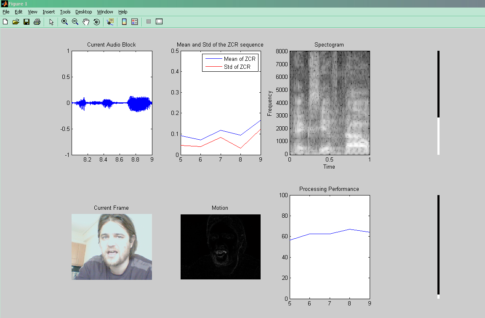

| Real Time Microphone and Camera data acquisition and audio-video processing | Theodoros Giannakopoulos Department of Informatics and Telecommunications Univarsity of Athens, Greece website: www.di.uoa.gr/~tyiannak |
General
The current Matlab-code can be used for real-time audio and image processing. Fixed-length segments of audio data are recorded from soundcard's input and an image is also captured in each block. In particular, the provided code does the following:
| AUDIO | Repetively records audio segments of fixed length. |
| Plots the (applitude) values of the current audio segment. | |
| Plots the spectogram of the current audio segment. | |
| Calculates the mean and std values of the Zero Crossing Rate for each segment, and plots those statistics for the last five segments. | |
| Calculates and plots the average spectral distance between the current and the previous audio segment. This is actually a simple measure of change detection in the audio information. | |
| VIDEO | Captures and plots an image for each block (frame). |
| Plots an estimation of the motion between the current and the previous frames. | |
| Plots the average absolute difference between two successive frames. | |
| OTHER | Calculates and displays the ratio of the processing time (for the feature calculation and the plotting processes) by the real signal data. |
Requirements:
I have tried the demo in Matlab2007b. I have also tried it in Matlab 6.5 and it seems that there are some problems with the acquisition functions (in particular with the audio acquisition): half of the times the getdata() call (line 171) fails.
Provided M-files:
| realTimeMic.m | This is the main m-file. It reads blocks (of fixed length) of audio information and it captures one image (from an attached camera) per block. |
| zcr.m | This function computes the Zero Crossing Rate of an audio signal in a short-term basis (i.e. one value of the ZCR function is calculated per frame). |
Example
In order to execute the demo, simply call the realTimeMic function with the following arguments:
duration: (in seconds) the duration of each audio segment (and the time interval between two succcesive images taken from cam).
nBlocks: number of blocks to be recorded
useVideo: 1 for recording video and 0 otherwise
For example write:
realTimeMic(1.0,100,1);
in the Matlab workspace. This will run the demo for 100 segments of 1.0 second each, and it will use the camera (it has to be attached) for capturing images.
In Figure 1, a screenshot of the demo is displayed.

Figure 1: A screenshot of the demo. In the first row the subplots display: 1) the audio signal's amplitude (current segment) 2) the mean and std values of the ZCR for the last five segments 3) the current segment's spectogram and 4) the average distance (absolute value) between the spectograms of the current and the previous segments (this is a measure of changes between 2 successive segments). In the second row the subplots display: 1) The currently captured image 2) the motion estimation 3) The ratio (%) of the processing by duration and 4) The average distance between two succesive frames.